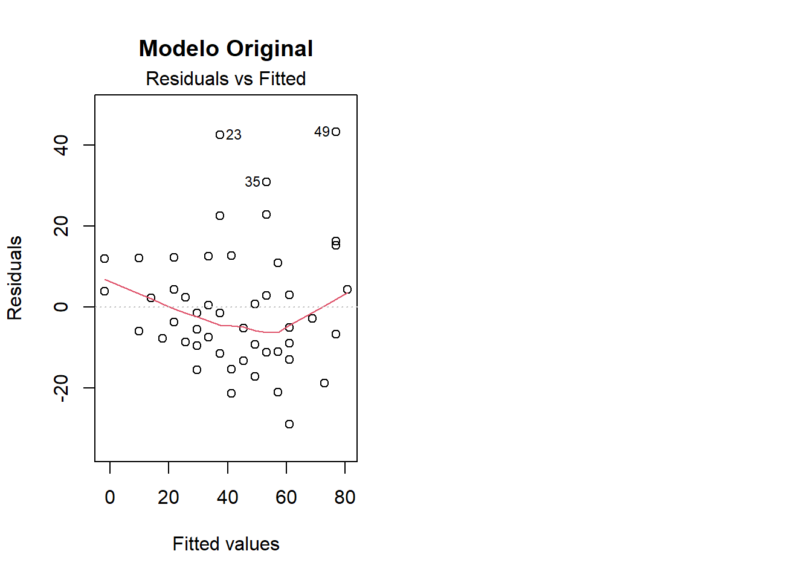

3.1 Ejercicio 1: Conceptual (Diagnóstico antes de Transformar)
El texto desaconseja fuertemente el enfoque de “ensayo y error” al aplicar transformaciones. Explica con tus propias palabras por qué la práctica de probar transformaciones hasta que mejore el R² es metodológicamente peligrosa. Menciona al menos tres de los riesgos específicos discutidos en los apuntes.
El enfoque de “ensayo y error” para transformaciones es metodológicamente peligroso por varios riesgos:
1. Data snooping/p-hacking: Probar múltiples transformaciones hasta encontrar una que mejore el R² aumenta artificialmente la probabilidad de encontrar patrones espurios.
2. Sobreajuste: El modelo resultante puede ajustarse específicamente a las peculiaridades de los datos de entrenamiento y no generalizar bien.
3. Pérdida de interpretabilidad: Las transformaciones complejas pueden hacer que el modelo sea difícil de interpretar y comunicar.
4. Invalidación de la inferencia estadística: Los p-valores y intervalos de confianza ya no son válidos cuando se ha hecho selección de modelos basada en los datos.
5. Falta de justificación teórica: Sin una base conceptual, la transformación puede no tener sentido en el contexto del problema.
3.2 Ejercicio 2: Práctico (Escalado de Variables)
Utiliza el dataset iris de R y céntrate en las cuatro variables predictoras continuas (Sepal.Length, Sepal.Width, Petal.Length, Petal.Width).
Calcula la media y la desviación estándar de estas cuatro variables en su escala original. ¿Son sus escalas directamente comparables?
Crea un nuevo data frame donde hayas aplicado la estandarización Z-Score a estas cuatro variables. Verifica que las nuevas variables tienen una media cercana a 0 y una desviación estándar de 1.
¿Por qué este paso de escalado es crucial antes de aplicar métodos de regularización como Ridge o Lasso, tal y como se menciona en el texto?
Las escalas NO son directamente comparables porque tienen diferentes unidades y rangos de variación.
b) Estandarización Z-Score:
iris_scaled <-as.data.frame(scale(variables_iris))estadisticas_scaled <-data.frame(Media =sapply(iris_scaled, mean),Desv_Est =sapply(iris_scaled, sd))print("Estadísticas después de estandarización:")
c) Importancia para regularización: El escalado es crucial para Ridge/Lasso porque estos métodos penalizan los coeficientes por su magnitud. Sin escalado, variables con escalas más grandes serían penalizadas más severamente, creando un sesgo artificial en la selección de variables.
3.3 Ejercicio 3: Conceptual (Elección del Método de Escalado)
Describe un escenario hipotético para cada uno de los siguientes casos, explicando por qué el método de escalado elegido sería el más apropiado:
Un escenario donde la estandarización Z-Score es preferible.
Un escenario donde la normalización Min-Max es preferible.
Un escenario donde el escalado robusto (usando mediana y IQR) es necesario.
a) Estandarización Z-Score preferible:
Escenario: Análisis de datos de rendimiento académico donde las variables son notas de diferentes materias con distribuciones aproximadamente normales.
Razón: Es el método estándar y funciona especialmente bien cuando las variables ya tienen una distribución aproximadamente simétrica o normal. Es la base de muchos procedimientos estadísticos que asumen este tipo de distribución.
b) Normalización Min-Max preferible:
Escenario: Sistema de recomendación donde necesitas que todas las variables estén en el rango [0,1] para combinarlas en un score.
Razón: Garantiza un rango específico y preserva las relaciones exactas entre valores.
c) Escalado robusto necesario:
Escenario: Datos financieros con outliers extremos (como ingresos con algunos multimillonarios).
Razón: La mediana y el IQR son menos sensibles a outliers que la media y desviación estándar.
3.4 Ejercicio 4: Práctico (Transformación para Linealizar)
En el tema anterior vimos que la relación en el dataset cars (entre speed y dist) no era perfectamente lineal.
Ajusta el modelo lm(dist ~ speed, data = cars) y genera el gráfico de residuos vs. valores ajustados para confirmar visualmente la no linealidad (patrón curvo).
Los apuntes sugieren que la transformación logarítmica es útil para relaciones con “rendimientos decrecientes”. Propón y aplica una transformación (ej. sobre el predictor, la respuesta, o ambos) para intentar linealizar la relación. Por ejemplo, ajusta lm(log(dist) ~ speed, data = cars).
Genera de nuevo el gráfico de residuos vs. valores ajustados para el nuevo modelo. Compara ambos diagnósticos. ¿Ha mejorado la linealidad?
a) Modelo original y diagnóstico:
modelo_cars_orig <-lm(dist ~ speed, data = cars)par(mfrow =c(1, 2))plot(modelo_cars_orig, which =1, main ="Modelo Original")

b) Transformación propuesta:
# Probamos transformación cuadrática del predictormodelo_cars_trans <-lm(dist ~I(speed^2), data = cars)plot(modelo_cars_trans, which =1, main ="Modelo Transformado")
# Alternativa: transformación logarítmica de la respuesta# (eliminando dist = 0 si existe)cars_filtered <- cars[cars$dist >0, ]modelo_log <-lm(log(dist) ~ speed, data = cars_filtered)par(mfrow =c(1, 1))plot(modelo_log, which =1, main ="Modelo log(dist) ~ speed")
c) Evaluación: Sí, la linealidad ha mejorado notablemente con ambas transformaciones. Comparando los gráficos, tanto la transformación cuadrática del predictor como la logarítmica en la respuesta consiguen eliminar el patrón curvo de los residuos. La transformación logarítmica (log(dist)) parece producir una dispersión de residuos ligeramente más aleatoria y homogénea.
3.5 Ejercicio 5: Práctico (Transformación de Box-Cox)
Usa el dataset Boston de la librería MASS. La variable respuesta medv (valor mediano de la vivienda) es estrictamente positiva y tiene cierta asimetría.
Carga la librería MASS y utiliza la función boxcox() para encontrar el valor de \(\lambda\) óptimo para la variable medv en un modelo simple frente a lstat. La fórmula sería boxcox(medv ~ lstat, data = Boston).
Observando el gráfico que se genera, ¿a qué valor “simple” (como -1, 0, 0.5, 1) se aproxima el \(\lambda\) óptimo?
Basándote en este resultado, ¿cuál de las transformaciones clásicas (logarítmica, raíz cuadrada, inversa, etc.) sería la más recomendable para la variable medv?
a) Análisis Box-Cox:
library(MASS)modelo_boston <-lm(medv ~ lstat, data = Boston)boxcox(modelo_boston)
b) Interpretación del gráfico: El λ óptimo parece estar cerca de λ = 0, lo que sugiere una transformación logarítmica.
c) Recomendación: Basándose en λ ≈ 0, la transformación más recomendable sería log(medv), que es la transformación logarítmica estándar.
3.6 Ejercicio 6: Conceptual (Codificación de Variables Categóricas)
Explica la diferencia fundamental entre la Codificación Ordinal y la Codificación One-Hot. Para cada una de las siguientes variables, indica qué método de codificación usarías y justifica tu elección:
Codificación Ordinal: Asigna números consecutivos preservando el orden (1, 2, 3, …)
Codificación One-Hot: Crea variables binarias (0/1) para cada categoría
Recomendaciones:
mes: One-Hot - Aunque tiene orden natural, los meses son cíclicos y la distancia entre Enero y Diciembre no es 11.
nivel_riesgo: Ordinal - Hay una clara jerarquía natural (Bajo < Medio < Alto < Crítico).
pais_origen: One-Hot - No hay orden natural entre países, son categorías nominales.
3.7 Ejercicio 7: Práctico (Interacción entre Variables Continuas)
Usa el dataset mtcars para investigar si el efecto del peso de un coche (wt) sobre su consumo (mpg) depende de su potencia (hp).
Ajusta un modelo que incluya un término de interacción entre wt y hp. Escribe la fórmula en R.
Observa el summary() del modelo. ¿Es el término de interacción (wt:hp) estadísticamente significativo a un nivel de \(\alpha = 0.05\)?
Basándote en el signo del coeficiente de la interacción, ¿cómo cambia el efecto del peso sobre el consumo a medida que aumenta la potencia? (Es decir, ¿el efecto negativo del peso se hace más fuerte o más débil en los coches más potentes?).
a) Modelo con interacción:
modelo_interaccion <-lm(mpg ~ wt + hp + wt:hp, data = mtcars)# O equivalentemente: lm(mpg ~ wt * hp, data = mtcars)
b) Summary del modelo:
summary(modelo_interaccion)
Call:
lm(formula = mpg ~ wt + hp + wt:hp, data = mtcars)
Residuals:
Min 1Q Median 3Q Max
-3.0632 -1.6491 -0.7362 1.4211 4.5513
Coefficients:
Estimate Std. Error t value Pr(>|t|)
(Intercept) 49.80842 3.60516 13.816 5.01e-14 ***
wt -8.21662 1.26971 -6.471 5.20e-07 ***
hp -0.12010 0.02470 -4.863 4.04e-05 ***
wt:hp 0.02785 0.00742 3.753 0.000811 ***
---
Signif. codes: 0 '***' 0.001 '**' 0.01 '*' 0.05 '.' 0.1 ' ' 1
Residual standard error: 2.153 on 28 degrees of freedom
Multiple R-squared: 0.8848, Adjusted R-squared: 0.8724
F-statistic: 71.66 on 3 and 28 DF, p-value: 2.981e-13
b) Significancia de la interacción: El p-valor del término de interacción wt:hp es aproximadamente 0.000811, que es mucho menor que 0.05, confirmando que la interacción es estadísticamente significativa.
c) Interpretación del signo y la significancia:
Significancia: El p-valor del término de interacción wt:hp es 0.000811, que es mucho menor que 0.05. Esto confirma que la interacción es estadísticamente significativa. El efecto del peso sobre el consumo realmente depende de la potencia del coche.
Interpretación del Coeficiente: El coeficiente de la interacción wt:hp es positivo (+0.02785). Esto significa que a medida que hp (potencia) aumenta, el efecto negativo de wt (peso) sobre mpg (consumo) se vuelve menos negativo (más débil). En términos prácticos: el “castigo” al consumo por cada kilo extra de peso es menor en los coches que ya son muy potentes.
3.8 Ejercicio 8: Interpretación de una Interacción (Continua x Categórica)
Un investigador modela el salario (salario, en euros) en función de los años de experiencia (experiencia) y si el empleado tiene o no un máster (master, con “No” como categoría de referencia). El modelo ajustado es:
c) Interpretación del coeficiente de interacción (300): El coeficiente de interacción indica que el retorno económico de cada año de experiencia es 300 euros mayor para los empleados con máster que para los empleados sin máster. Es decir, la experiencia es más valiosa económicamente para quienes tienen un máster.
3.9 Ejercicio 9: Conceptual (Principio de Jerarquía)
Explica el principio de jerarquía en el contexto de los modelos de regresión con interacciones. Si un modelo incluye el término de interacción A:B, ¿por qué es una buena práctica incluir siempre los efectos principales A y B, incluso si sus tests t individuales no son significativos?
El principio de jerarquía establece que si incluimos un término de interacción A:B, debemos incluir siempre los efectos principales A y B, incluso si no son individualmente significativos.
Razones:
Interpretabilidad: Los términos de interacción representan desviaciones de los efectos principales. Sin los efectos principales, la interpretación se vuelve confusa.
Estabilidad numérica: Los algoritmos de ajuste pueden volverse inestables sin los términos principales.
Coherencia teórica: Desde una perspectiva conceptual, una interacción implica que existen efectos principales que se modifican mutuamente.
3.10 Ejercicio 10: Conceptual (Ingeniería de Características Avanzada)
Los apuntes discuten la creación de nuevas variables mediante ratios y combinaciones. Para cada uno de los siguientes escenarios, propón una nueva variable (feature) que podrías crear y explica qué relación podría capturar mejor que las variables originales por sí solas.
Para predecir la rentabilidad de una tienda, tienes las variables ventas_totales y numero_de_empleados.
Para predecir el riesgo de impago de un solicitante de préstamo, tienes las variables ingresos_anuales y deuda_total.
Relación capturada: Productividad por empleado, que puede ser mejor predictor de rentabilidad que las variables por separado, ya que considera tanto el volumen de negocio como la eficiencia operativa.
Relación capturada: Capacidad de pago relativa. Un ratio alto indica mayor riesgo independientemente de los valores absolutos. Por ejemplo, 50,000€ de deuda es muy diferente con ingresos de 30,000€ vs 100,000€.